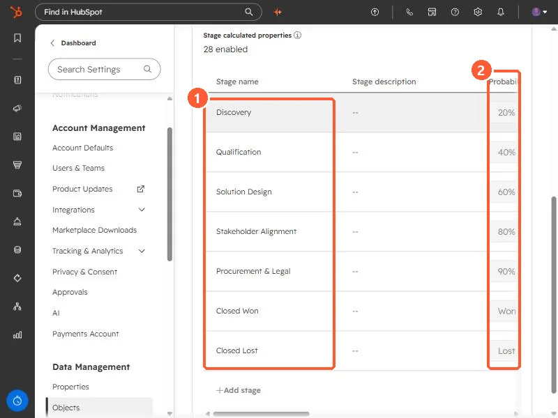

Short answer
In Settings, Objects, Deals, Pipelines, open a pipeline. The Configure tab lists each stage with a Probability. HubSpot says stage probability determines the weighted amount in board view, calculated by multiplying the total amount in each stage by its probability. HubSpot's default pipeline uses 20%, 40%, 60%, 80%, and 90%, with Closed won set to Won and Closed lost to Lost. My demo Enterprise Sales Pipeline follows the same percentages with its own stage names.
1. Where the probability is
Open deal pipeline settings and click a pipeline. The Configure tab has a table of stages.


My demo stages are Discovery (20%), Qualification (40%), Solution Design (60%), Stakeholder Alignment (80%), Procurement & Legal (90%), Closed Won (Won), and Closed Lost (Lost).
2. What it does
- HubSpot uses it for the weighted amount in board view: the total amount in a stage multiplied by that stage's probability.
- Won and Lost are what mark a stage as closed. Everything with a percentage is an open stage.
- HubSpot's default pipeline has seven stages: Appointment scheduled (20%), Qualified to buy (40%), Presentation scheduled (60%), Decision maker bought-in (80%), Contract sent (90%), Closed won, and Closed lost.
3. When to change it
If a stage at 60% closes far less often than that, the weighted pipeline will look better than reality. The percentages are only as good as the team's agreement on what each stage means. The other columns in this table include Stage ID, see find pipeline and stage IDs.